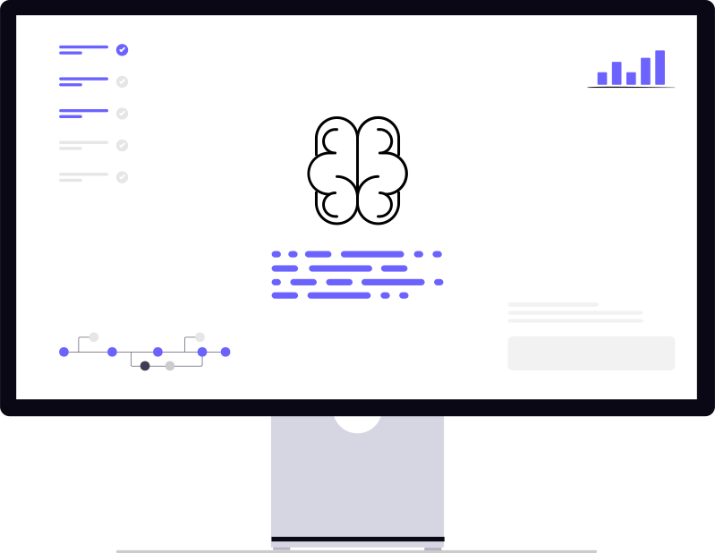

触ってわかる！最新生成AI 早見ガイド
2025年版、無料で試せる６ツールを一気に体験
このサイトは Gemini CLI で自動生成・更新しています。
AIツール詳細解説
ChatGPT 無料プランOK
何ができる？
| やりたいこと | 具体例 | ひとこと説明 |
|---|---|---|
| 長い文章を要約 | 会社のお知らせ／ネット記事／論文など | コピペして「この文章を要約して」と頼むだけ |
| 写真を見せて質問 | 旅行先レストランのメニュー→「この料理は何？おすすめは？」 英語の宿題プリント→「日本語で説明して」 | 画像をアップ→質問を書く |
| メール文を書く | 「取引先へ納期変更をお願いするメールを書いて」 | 口調（ていねい／カジュアル）や文字数も指定可 |
| アイデア出し | 新商品の名前／SNS 投稿ネタ／キャッチコピー | 「〇〇のアイデアを10個挙げて」など |
強み:
・無料で GPT-4o の高精度が使える（無料帯トップクラスの正答率 ≈ 86 MMLU）
・写真をアップして質問でき、さらに 1 日 3 枚まで 4-Image Generation 相当の画像を生成（無料ツールでは上位クラスの品質）
・日本語ほか多言語でも安定して回答
※速度は Gemini Flash が最速だが、無料で「高精度テキスト＋画像理解＋画像生成」を同時に使えるのは ChatGPT だけ
注意点: 無料枠に回数制限。個人情報は入力しない。
Gemini 無料プランOK
何ができる？
| やりたいこと | 具体例 | ひとこと説明 |
|---|---|---|
| 超長文を秒速サマリ | 100 万字 PDF ／ 分厚い決算書 | 全文貼って「要約して」ですぐ |
| 図表を含む速攻レポート | 売上 CSV →「グラフ付きで分析して」 | Flash モデルで低遅延 |
| 画像を生成 | ブログ用アイキャッチ | 「○○風に描いて」で直接生成 |
| 多言語 QA | 英西日など混在資料 | 52 言語以上を同一スレで処理 |
強み:
・無料で Gemini 2.5 Flash が使え、最大 1 M トークン 処理（2 M 予定）
・画像をその場で生成／解析（モデルは Google Imagen 2 系）
・回答速度は主要無料 LLM で最速クラス
・Google Workspace 連携で Docs／スライドに直接貼り付け
注意点: 超大容量入力は Pro が安定。法人機能は別プラン。
Claude 無料プランOK
何ができる？
| やりたいこと | 具体例 | ひとこと説明 |
|---|---|---|
| 議事録を整理 | 会議ログ → 要点 5 行 | 自然な敬語でまとめるのが得意 |
| 仕様書 ⇒ コード生成 | API 仕様 → TypeScript | 型安全＋テストも提案 |
| 長編ドラフト作成 | ホワイトペーパー／小説 | 200 k トークンで文脈保持 |
| リライト・校正 | 英語メールを自然に改善 | トーン指定がきめ細かい |
強み:
・Claude 4 Sonnet が無料で 200 k トークン まで扱える（長文特化）
・論理展開とコード品質が高評価（HumanEval +14 %）
・文体コントロールが細やかでビジネス文書に強い
注意点: 画像生成は不可。日本語⇔英語混在長文で稀に脱線。
GenSpark
概要: AIが自動でプレゼンテーション資料を作成してくれるツールです。テーマやキーワードを入力するだけで、構成案からスライドデザインまでを提案します。
使い方: 「Create a new presentation about...」の入力欄に、作成したいプレゼンのテーマを具体的に入力します。日本語での入力も可能です。
活用例:
- 新規事業の企画書作成
- セミナー資料の骨子作成
- 社内研修用スライドの自動生成
- アイデアを視覚化するためのクイックプロトタイプ
強み: テーマと箇条書きを渡すだけで全スライドを自動構成。**デザイン性が高く、情報量の多い資料を短時間で作成可能。無料枠は1日1回まで。**
Manus
概要: AIを活用した資料作成ツールであり、AIエージェントとしての機能も持ち合わせています。テキストや指示に基づいて、プレゼンテーション、レポート、企画書などのドキュメントを効率的に生成・編集できます。また、情報収集やタスクの自動化といったエージェント的な役割も果たします。
使い方: 作成したい資料の種類と内容を具体的に指示します。例えば、「〇〇に関するプレゼンテーション資料を作成して」「このデータからレポートを生成して」といった形で入力します。AIエージェnt機能を利用する場合は、実行したいタスクを明確に伝えます。
活用例:
- 会議資料の自動生成と要点整理
- 市場調査レポートの作成支援
- 営業提案書のパーソナライズ
- 特定の情報に基づいた自動メール作成
強み: マークダウン感覚で指示→完成度の高い資料に変換。AI エージェントとして各種タスク自動化も可能。**無料枠は300クレジット（指示内容により消費クレジット変動）。資料全体のデザインを細かく指示でき、ロゴや色指定などビジネスシーンに特化した資料作成が可能。**
SUNO
概要: テキストから音楽を生成するAIです。歌詞や曲調の指示を入力するだけで、ボーカル入りの楽曲を自動で作成します。
使い方: 「Style of Music」にジャンル（J-POP, ロックなど）、「Lyrics」に歌詞を入力し、「Create」ボタンを押します。歌詞を自動生成させることも可能です。
活用例:
- オリジナル楽曲のデモ作成
- プレゼンテーションや動画のBGM制作
- イベントのテーマソング作成
- 作詞・作曲のアイデア出し
強み: 歌入り楽曲をワンクリック生成。構成タグでAメロ/サビなど細部を制御できる稀少な作曲特化 AI。
注意点: 無料枠は 50 曲／日・30 秒まで。
Google Veo 3
概要: Google DeepMind が開発したテキスト→動画生成 AI。プロンプトから HD／長尺動画を数分で生成できる。
使い方: Google AI Studio で “Video” タブを開き、ストーリーボードかテキストを入力して Generate を押す。
活用例:
- プロモーション用ショート動画
- SNS 向けループ GIF
- サービス紹介アニメーション
強み: 1080p の高画質・最長 60 秒まで生成。動きが自然で長尺も OK。1 回で複数スタイルをプレビュー。
注意点: 一般公開は招待制ベータ中で本数制限あり。
活用事例セクション


2. GenSpark - AIでプレゼン資料
3. Manus - AIで資料作成・エージェント
使い方はかんたん3ステップ
1. 登録
メールアドレスやGoogleアカウントで無料登録。
2. 入力
作りたいものを日本語で入力・指示するだけ。
3. 共有
できた作品はリンクで簡単にシェアできる。